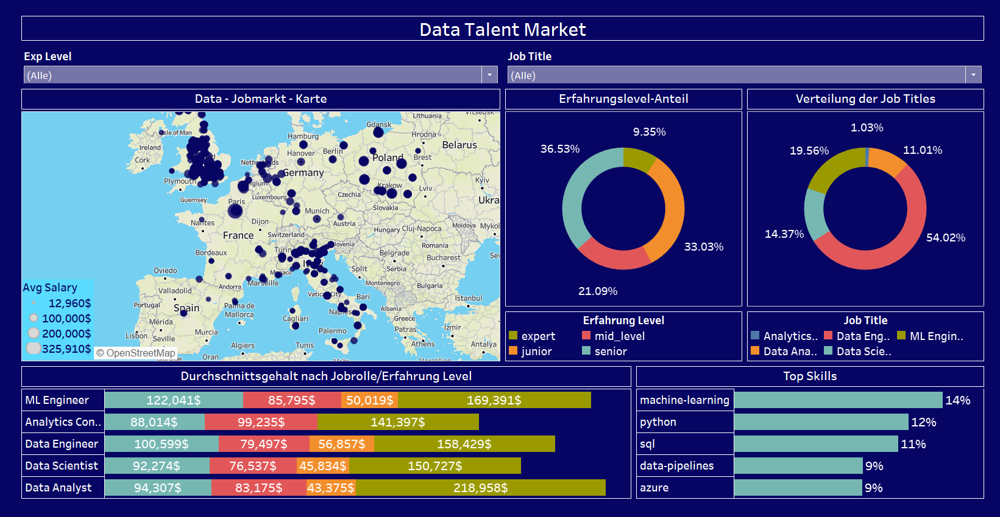

<div class="project">
  <h3>Project 1</h3>
  <div>
    <!-- # 🌍 Weltweite Daten-bezogene Jobstellen Analyse & Gehaltsvorhersage mit Machine Learning
# 

📌 Projektbeschreibung
Dieses Projekt analysiert Jobangebote für datenbezogene Berufe weltweit und erstellt eine Gehaltsvorhersage basierend auf verschiedenen Faktoren.
Dafür wurden Web Scraping, Machine Learning und eine interaktive Web-App kombiniert.

# 🎯 Ziele des Projekts
✅ Sammlung und Analyse von Job-Daten über Web Scraping (APIs von Adzuna)
✅ Datenvisualisierung mit Tableau (z. B. Gehälter nach Region, Top-Skills)
✅ Entwicklung eines Machine Learning-Modells zur Gehaltsvorhersage
✅ Erstellung einer Streamlit Web-App zur interaktiven Nutzung

# 

# 🛠 Technologien & Tools
Technologien & Tools
🔹 Python (Pandas, NumPy, Scikit-Learn, BeautifulSoup, Requests)
🔹 Web Scraping mit Adzuna API
🔹 Machine Learning (Lineare Regression, Random Forest, XGBoost)
🔹 Datenbank & SQL für Speicherung und Verarbeitung
🔹 Tableau für interaktive Dashboards
🔹 Streamlit für die Web-App


# 📊 Funktionen & Features
🔸 Datenextraktion: Automatisches Abrufen von Job-Daten über APIs
🔸 Datenvisualisierung: Dashboards mit Gehaltsverteilung, Top-Berufen, Trends
🔸 Machine Learning: Vorhersage von Gehältern basierend auf Erfahrungslevel, Standort, Branche
🔸 Streamlit Web-App: Benutzerfreundliche Oberfläche für die Gehaltsprognose
 -->
    <h4>Overview</h4>
    <p>This project focuses on analyzing global data-related job postings...</p>
    <h4>Web App</h4>
    <a href="https://your-streamlit-link.com">Launch App</a>
    <h4>Visualization</h4>
    
  </div>
</div>
